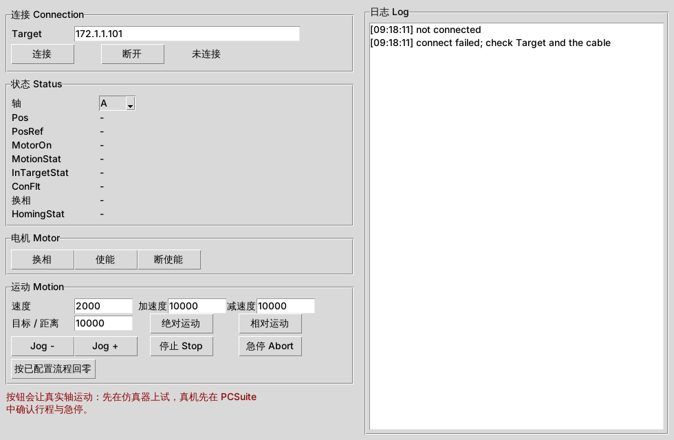

Axis panel¶
Run basic axis controls and advanced workflows in one panel, available in C#, C++ and Python.

The Python version (tkinter) on Linux, not connected; C# uses WPF and C++ a Win32 dialog, and the screenshot shows the basic axis controls.
The window¶
| Area | Contents |
|---|---|
| Connection | Target defaults to the controller factory IP 172.1.1.101; the full path of firmware_sim.exe connects the simulator |
| Status | Pos, PosRef, MotorOn, MotionStat, InTargetStat, ConFlt, commutation and HomingStat of the selected axis, refreshed every 250 ms, with descriptions |
| Motor | Commutate, motor on, motor off |
| Motion | Speed, acceleration, deceleration, target or distance; absolute move, relative move, jog −/+, stop (Decel), abort (EmrgDec) |
| Homing | Home with the sequence configured in the controller |
| Log | Each command's result, and the code and text the error callback reports |
The buttons only send commands: whether commutation, homing or a move has finished shows in the status panel (InTargetStat turning 4, HomingStat turning 100). It is the small demos' rule that an accepted command is not a finished action.
The buttons move a real axis
Try the simulator first; on hardware, tune in PCSuite and verify travel and emergency stopping first. Closing the window requests stop and motor-off on the selected axis before disconnecting, but disconnecting is not proof of standstill.
APIs behind the buttons¶
| UI control | C# | C++ | Python |
|---|---|---|---|
| Connect / Target | AAMotionAPI.Connect(c, target) |
aamotion_connect(h, target, true, false) |
am.connect(h, target, True, False) |
| Disconnect | AAMotionAPI.Disconnect(c) |
aamotion_disconnect(h) |
am.disconnect(h) |
| Commutate | a.AutoPhase() |
aamotion_auto_phase(h, axis) |
am.auto_phase(h, axis) |
| Enable / disable | a.MotorOn = 1 / 0 |
aamotion_motor_on(h, axis) / aamotion_motor_off(h, axis) |
am.motor_on(h, axis) / am.motor_off(h, axis) |
| Absolute move | a.MoveAbs(value, speed, accel, decel) |
aamotion_move_abs(h, axis, value, speed, accel, decel) |
am.move_abs(h, axis, value, speed, accel, decel) |
| Relative move | a.MoveRel(value, speed, accel, decel) |
aamotion_move_relative(h, axis, value, speed, accel, decel) |
am.move_relative(h, axis, value, speed, accel, decel) |
| Jog −/+ | a.Jog(direction * speed) |
aamotion_jog(h, axis, direction * speed) |
am.jog(h, axis, direction * speed) |
| Stop | a.Stop() |
aamotion_stop(h, axis) |
am.stop(h, axis) |
| Abort button | a.Abort() |
aamotion_abort(h, axis) |
am.abort(h, axis) |
| Home | a.Home() |
aamotion_home(h, axis) |
am.home(h, axis) |
a is the selected axis object and axis is its identifier. The speed, acceleration and deceleration fields supply speed, accel and decel. The target field means a position for an absolute move and a displacement for a relative move. The position display reads Pos. Use the simulation connection API for a simulator.
The window and communication sources ship under samples/app/. To practice one feature at a time, start with the complete beginner projects.
Advanced operations¶
Select an operation in the Advanced menu, enter comma-separated parameters as prompted, and click Run. Single-axis operations use the selected axis. CNC and vector operations use A/B. The log shows replies, errors, and exported file paths.
| Feature | Operation and result |
|---|---|
| DataLogger | Record the selected axis position every 1 ms for 1 s. Export time in seconds and position in counts to CSV. |
| SlowLogger | Start, upload, and stop from separate menu items. Upload saves the raw FIFO response. A status operation reads lost packets. |
| CNC | Enter the A and B displacements in counts to start a line. For an arc, enter the absolute endpoint, absolute center, and direction. Pause, resume, stop, or query completion. The path I/O demo pulses A output 1 for 200 ms at the endpoint before returning. Verify the output state if the run stops. The panel can also run an existing CNC text file. |
| Electronic gearing | Select the follower and enter the master's composite CAN code and ratio numerator. The denominator is 65536. Direct and indirect modes have separate start operations. Read follower status or stop it from the same menu. |
| Electronic cam | Configure the table and master in PCSuite, then select the follower and enter table 1–10. Start or stop the follower and read the cycle count. |
| Two-speed, two-axis, and vector | Enter positive travel and switch distance for a two-speed move. Enter absolute A/B targets for batched positioning and vector lines. Vector arcs also take an absolute center and direction. Check the in-target state of both axes. Use Stop A and B to request a stop on both. |
| I/O, latch, PEG, and programs | Read inputs, set or clear outputs, enable or disable the latch, arm a single-position PEG, read its count or disable it, and start or halt a downloaded program. |
| Diagnostics | Read motion mode, Central-i link status, and indexed GenData, or send one text command. |
Sine PTP and PVAJ¶
See PVAJ trajectory motion for the complete workflow.
- Sine PTP supports single moves (mode 20), reciprocating moves (mode 21 with
RptMode=0), pre-cruise, and on-the-fly target changes. The demo uses a cruise speed of 2000 counts/s, acceleration and deceleration of 10000 counts/s², and jerk parameters of 100000 counts/s³. Place the pre-cruise target between the currentPosRefand the final target. Use a pre-cruise speed at least as high as the cruise speed.PreCruiseSpd=0disables pre-cruise. UseStopRepto end reciprocation. - On-the-fly changes write a complete motion parameter set and then send
CommitMotion. The panel disables pre-cruise for the new target and keeps the active motion mode. The planner calculates the splice in the background for a single move. A repetitive move applies the change at the end of the current leg. CheckInTargetStat,ConFlt, and planner errors 380–389. C# callsSinePtpBeginandSinePtpCommit. C++ and Python use the released text-command API. - PVAJ requires AGM800 (Central-i v5) firmware with PVAJ support. Enter relative travel in counts, a gap of 1–32 control ticks, and the controller's actual base control period in microseconds. The panel generates five
P,V,A,Jrows from four equal intervals of constant jerk, starting and ending at zero velocity and acceleration. With intervalTequal to gap times the base period in seconds, the four jerk values are+j, −j, −j, +j, wherej = travel / (2T³). For example, at 32 ticks of 1000 µs,T=0.032 sand total duration is 128 ms. Choose a travel that fits the machine's position, velocity and acceleration limits. - PVAJ upload and validation writes length, gap and relative mode 1, then four values per row. Full validation mode 1 checks range and position and velocity continuity before selecting mode 22, arming, and calling Begin. If continuity validation fails, check the actual base period,
PVAJPosTolandPVAJVelTol. At gaps above 1 the controller interpolates between points with a quintic spline. - PVAJ status reports state, execution index, and remaining points. States 0, 1, 2 and 3 mean unvalidated, validated, armed, and executing. Normal completion disarms the axis and returns to state 0. Check the fault code, motion state, and final position. If upload or validation fails, inspect the log before rewriting and validating the list.
The workflows are in AxisOperations.cs, AxisOperations.cpp, and axis_operations.py. All three menus use samples/app/operations.tsv. The C# and C++ builds copy it beside the executable. Before closing, stop active A/B groups, followers or programs, and stop any SlowLogger session started by the demo.
Run¶
- Open
samples/app/csharp/AxisPanel/AxisPanel.csprojin Visual Studio. - Check the default
TargetinMainViewModel.cs, or change it in the window. - Press F5. Needs the .NET Framework 4.8 developer tools; the first build restores the NuGet package
Agito.AAMotionat the version this guide documents.
- Extract the native SDK
agito-aamotion-native-sdk-<version>.zip. - In Visual Studio, "Open a local folder" on
samples/app/cpp/AxisPaneland setAAMOTION_SDK_DIRinCMakePresets.jsonto the SDK folder. - Pick
AxisPanel.exeand press F5; the build copiesaamotion.dllandAACommServerNative.exebeside the program. Windows only.
- Install a 64-bit Python 3.9 or later (tkinter included).
- In
samples/app/python, runpython get_sdk.pyonce: it downloads and checks the SDK and puts the library andAACommServerNativebesideaamotion.py. - Run
python axis_panel.py.